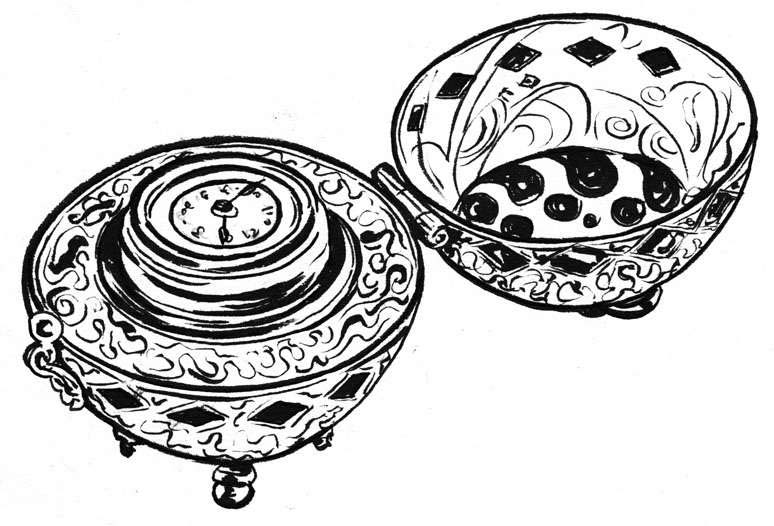

计时史上下一个重大进步是以发条作为动力来源的擒纵器的发明。以发条驱动擒纵装置的时钟出现于15世纪早期，取代了原本靠重锤驱动的时钟。该装置的工作原理是利用发条的收放，先将螺旋弹簧绕紧，然后再逐渐松开，从而释放动能。第一座发条驱动时钟出现在1430年，被勃艮第公爵（Duke of Burgundy）拥有（当时的勃艮第公国，现属法国）。
15世纪晚期，带有分针和秒针的时钟开始出现，但带秒针的时钟并没有保存下来（最早的一个制于1560年）。在此之前，大部分时钟都只有一个指针，表盘平均分为4块，每块代表15分钟。
发条的发明带来了时钟和制表业的蓬勃发展，尤其是在德国的纽伦堡 [1] 和奥格斯堡地区。随着技术成本逐渐降低，人们对时钟的需求开始猛增。
小型钟表在16世纪中期很流行，人们会把它当作装饰品挂在脖子上或系在衣服上。但这些钟表需要定时上发条，每天至少2次以上。
富有而讲究的纽伦堡之所以脱颖而出，是因为当地利用动物、花朵、昆虫和头骨等形状制造了各式各样、造型另类、抓人眼球的钟表。当时的钟表还没有镜面，所以表盘是裸露的，但大多数表都配有表盖来保护指针。直至17世纪早期，玻璃镜面才成为钟表的标配。
1510年，德国钟表大师彼得·亨莱因（Peter Henlein，1485—1542）制造出“纽伦堡蛋”——世上第一只便携的表，后人将亨莱因誉为怀表的发明者。但其实当时的纽伦堡还有很多才华横溢的制表人，他们潜心为爱好时尚的客户制造出体积更小、更精致的计时器。

纽伦堡蛋
事实上，钟表匠之间的竞争非常激烈，以致升级为暴力冲突。1504年9月，亨莱因与其同行（锁匠兼钟表匠）乔治·格拉泽（George Glaser）发生冲突，导致后者身亡。有关这一事件的细节已经很难考证，只知道亨莱因后来逃到当地的一个方济会 [2] 修道院躲避了4年。1509年，他重获支持并成为纽伦堡锁匠协会会长。
腓力二世和机械修道士
西班牙国王腓力二世（King Felipe II，1527—1598）的儿子，同时也是王位继承人的查尔斯王子脑部曾严重受损，国王为此悲痛欲绝。后来查尔斯奇迹般痊愈，国王坚信一定是上帝对自己家族有所眷爱，回应了他们的祈祷。腓力发誓从此以后将坚持祈祷以感谢上帝的恩宠。但当国王可是个很忙的差事，所以腓力并没有亲自去祈祷，而是下令制造一个自动机（即机器人）来替他祈祷。
这个“机械修道士”高约15英寸，由木头和铁组成，运用了当时制表业的最新技术。它由一个需要手动上发条的弹簧驱动，可以在一个四方形范围内行走。修道士在行走时会举起一只手敲打胸口，另一只手拿着一个木制十字架和念珠不断地举起再放下。此外，在运行的时候，它还会点头、拐弯、转动眼睛，嘴巴还会一张一合地念“祈祷文”。
400年过去了，这台“永动祈祷机”至今仍运行良好，收藏于华盛顿特区的史密森学会。